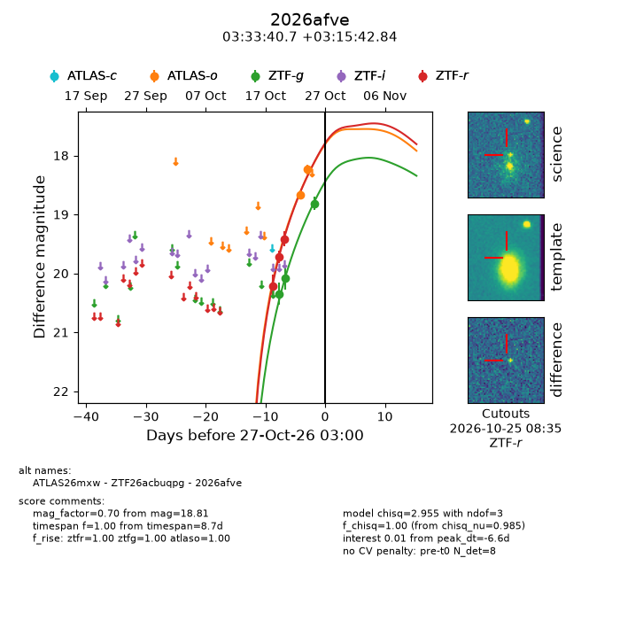
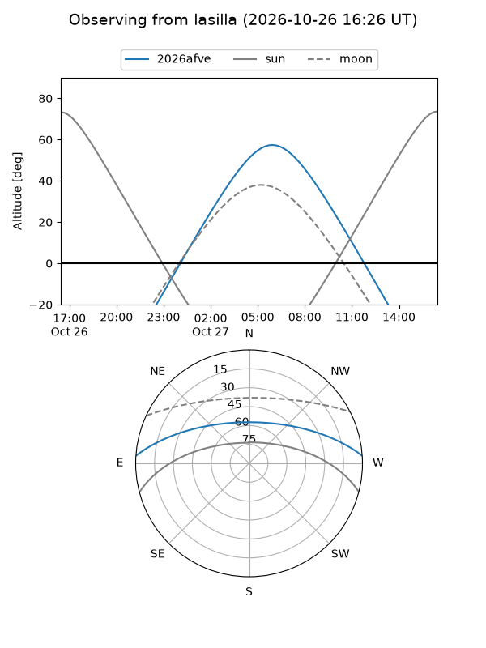
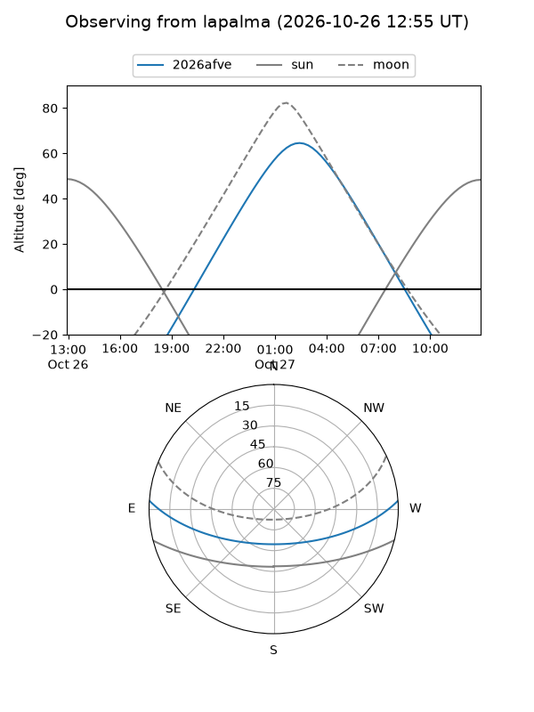
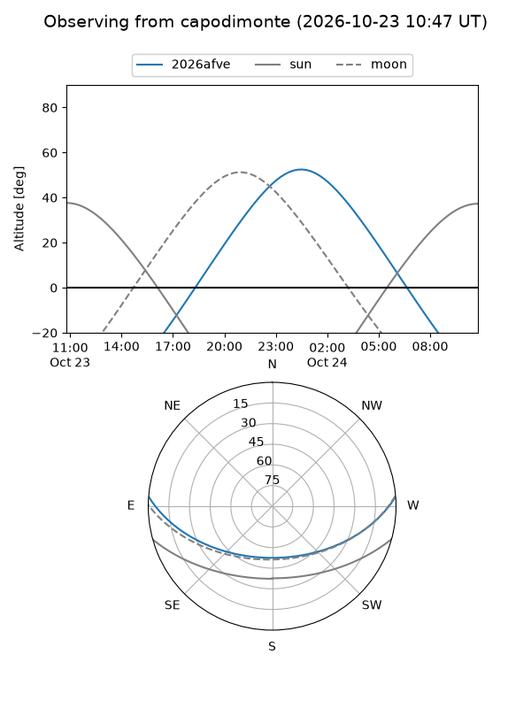
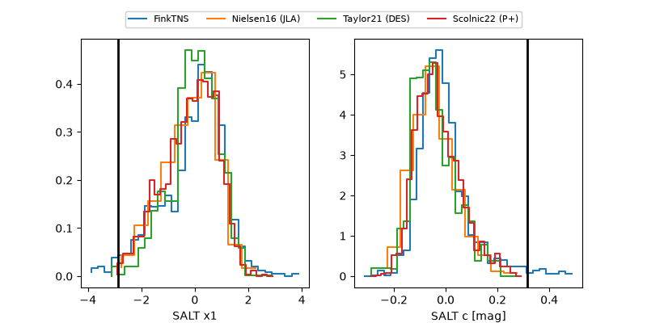

2026afve
Target 2026afve at 2026-10-27 03:01
Aliases and brokers:
FINK-ZTF: ztf.fink-portal.org/ZTF26acbuqpg
Lasair-ZTF: lasair-ztf.lsst.ac.uk/objects/ZTF26acbuqpg
ALeRCE-ZTF: alerce.online/object/ZTF26acbuqpg
YSE-PZ: ziggy.ucolick.org/yse/transient_detail/2026afve
TNS name: wis-tns.org/object/2026afve
Direct TNS query: direct search
alt names
ZTF26acbuqpg (ztf,fink_ztf)
2026afve (tns,yse)
ATLAS26mxw (atlas)
Coordinates:
equatorial (ra, dec) = 53.4195,+3.26190
equatorial (HMS+DMS) = 03:33:40.67,+03:15:42.84
galactic (l, b) = (181.5169,-40.47421)
Flags:
peak dt: -6.6
Photometry:
last atlaso=18.24, ztfg=18.81, ztfr=19.41
2 atlaso, 3 ztfg, 3 ztfr detections
Lightcurve

Visibility



Additional plots
